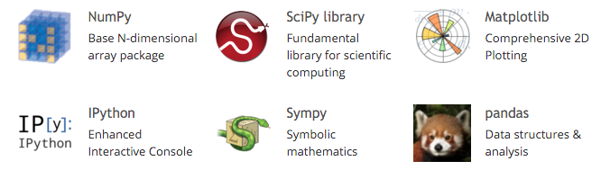
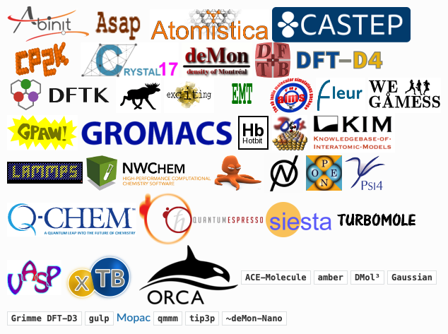

Quantum Mechanics and Interatomic Potentials – the QUIP code
James Kermode
Warwick Centre for Predictive Modelling / School of Engineering University of Warwick
CCP5++ Software Seminar - 17th June 2021
|
|

These slides will subsequently be made available at https://libatoms.github.io/QUIP/Tutorials
[ ]:
import numpy as np
import scipy.linalg
import matplotlib.pyplot as plt
import quippy
from mpl_toolkits.mplot3d import Axes3D
#Customize default plotting style
%matplotlib inline
import seaborn as sns
sns.set_context('talk')
[ ]:
plt.rcParams["figure.figsize"] = (12, 10)
from ase.neighborlist import neighbor_list
def get_bonds(atoms, cutoff=3.05, filter_in_cell=True):
i, j, S = neighbor_list('ijS', atoms, cutoff)
if filter_in_cell:
in_cell = np.all(S == 0., axis=1)
i = i[in_cell]
j = j[in_cell]
bonds = [ np.r_[[atoms.positions[I, :],
atoms.positions[J, :]]] for (I, J) in zip(i, j)]
return bonds
Motivation¶
Many of the activities our community is interested in require robust, automated coupling of two or more codes
For example, current projects include:
developing and applying multiscale methods
generating interatomic potentials
uncertainty quantification

Image credit: Gábor Csányi
The QUIP code¶
QUIP is a collection of software tools to carry out molecular dynamics simulations in non-standard ways, in particular:
Using the Gaussian Approximation Potential (GAP) framework for data-driven potentials
Hybrid combinations in the style of QM/MM with a particular focus on materials systems such as metals and semiconductors
Long-term support of the package is ensured by: - James Kermode (Warwick) - Gabor Csanyi (Cambridge) - Noam Bernstein (Naval Research Lab)
Portions of the code were written by: Albert Bartok-Partay, Livia Bartok-Partay, Federico Bianchini, Anke Butenuth, Marco Caccin, Silvia Cereda, Gabor Csanyi, Alessio Comisso, Tom Daff, ST John, Chiara Gattinoni, Gianpietro Moras, James Kermode, Letif Mones, Alan Nichol, David Packwood, Lars Pastewka, Giovanni Peralta, Ivan Solt, Oliver Strickson, Wojciech Szlachta, Csilla Varnai, Steven Winfield, Tamas K Stenczel, Adam Fekete.
See GitHub contributors for a more complete list of code authors
Code philosophy and goals¶
QUIP was born because of the need to efficiently tie together a wide variety of different models, both empirical and quantum mechanical.
It is not intended to be competitive in terms of performance with codes such as LAMMPS and Gromacs.
The Atomic Simulation Environment (ASE) also does does this, and is much more widely used, but QUIP has a number of unique features:
Access to Fortran types and routines from Python via the quippy package
Support for Gaussian Approximation Potentials (GAP)
Does not assume minimum image convention, so interatomic potentials can have cutoffs that are larger than the periodic unit cell size
History¶
QUIP began as rewrite of earlier C++ and Fortran 77 codes in ca. 2005
Coded in modern Fortran (Fortran 95 plus allocatable array extensions, but none of the object-oriented features from 2003/2008, mostly because of limited compiler support historically)
Expressive Programming, where code is as close as possible to abstract algorithm, without sacrificing (too much) performance
e.g. we have a
type(Atoms)with componentsAtoms%positions, etcnot a full OO approach with arrays of individual
Atomobjects, which would risk reducing cache efficiency
OpenMP and MPI parallelisation for potential evaluation (although LAMMPS
pair_style quipwill be faster)quippydeep Python bindings provided acccess to elements within derived types
Current status¶
QUIP now comprises ~200 kLOC of Fortran 95 code
Main use is as GAP driver and for fitting GAP models
Fortran to Python interface generation now separated out into f90wrap standalone package
Code is now ~80% Fortran with minimal Python high-level interface to ASE
Unit tests, driven via
quippyPython package, have reasonable coverage of public APIContinuous integration runs unit tests on GitHub Actions (recently migrated from Travis-CI) on all commits and before PRs get merged, and also builds documentation
High-level generic functionality has (mostly) been moved out of QUIP and contributed to more widely used codes, e.g. the preconditioned optimizers in ASE were first prototyped in QUIP
Code Availability¶
Most of QUIP is licensed under the GPLv2, with some code in the public domain. Submodules have different licences, e.g. GAP has a non-commerical academic software license.
Quick start:
git clone --recursive https://github.com/libAtoms/QUIP
cd QUIP
export QUIP_ARCH=gfortran_linux_x86_64_openmp # for example
make config # answer some y/n questions
make
Required: - recent gfortran or ifort compiler - LAPACK/BLAS linear algebra libraries (e.g. libblas-dev and liblapack-dev on Ubuntu or Intel MKL)
See the GitHub README for detailed instructions, or try one of the pre-compiled binary releases.
Binary Installation¶
I have very recently added binary wheels for Python on x86_64 Linux and Mac OS X machines:
pip install quippy-ase
Python dependencies (numpy, f90wrap and ase) are installed automatically, and you get the quip and gap_fit command line programs as a bonus. Open issues in quippy-wheels with problems.
Docker and Singularity containers¶
For a quick start, a pre-compiled Docker image is also available:
docker pull libatomsquip/quip
This includes QUIP, GAP and LAMMPS setup to work with QUIP, and also works with Singularity for use on machines where you are not root:
singularity pull docker://libatomsquip/quip
QUIP Features¶
The following interatomic potentials are presently coded or linked in QUIP:
BKS (van Beest, Kremer and van Santen) (silica)
EAM (fcc metals)
Fanourgakis-Xantheas (water)
Finnis-Sinclair (bcc metals)
Flikkema-Bromley
GAP (Gaussian Approximation Potentials)
Guggenheim-McGlashan
Brenner (carbon)
OpenKIM (general interface)
Lennard-Jones
…
…
MBD (many-body dispersion correction)
Morse
Partridge-Schwenke (water monomer)
Stillinger-Weber (carbon, silicon, germanium)
Si MEAM (silicon)
Sutton-Chen
Tangney-Scandolo (silica, titania etc) - including short-ranged reparamaterisation
Tersoff (silicon, carbon)
Tkatchenko-Sheffler pairwise dispersion correction
The following tight-binding functional forms and parametrisations are implemented:
Bowler
DFTB
GSP
NRL-TB
QUIP data model¶
Central to QUIP is the Atoms type.
Basic structure mirrors XYZ format with chemical species and atomic positions plus a free-form comment line.
Extended XYZ format adds lattice, PBC and additional columns:
2
Lattice="0.0 2.715 2.715 2.715 0.0 2.715 2.715 2.715 0.0" Properties=species:S:1:pos:R:3:forces:R:3 energy=-0.07221481569985196 pbc="T T T"
Si 0.00049671 -0.00013826 0.00064769 -0.00017116 0.00001541 0.00014705
Si 1.35902303 1.35726585 1.35726586 0.00017116 -0.00001541 -0.00014705
This maps onto QUIP’s flexible (but not too flexible) data model for atomic per-configuration and per-atom properties, analogous to ase.atoms.Atoms.arrays and ase.atoms.Atoms.info dictionaries in ASE.
Extended XYZ now quite widely used and supported, e.g. in ASE and the OVITO visualisation package.
Specification has recently been formalised to tidy up what’s allowed in the
key=valuepairs. A canonical parser with C, Fortran, Python and Julia bindings will shortly be released, and integration with all dependencies.
Standalone QUIP usage¶
However you have installed QUIP, you will have a quip executable which can be used for basic tasks such as evaluating forces, energies and virials. For example, to use the Tangney-Scandolo potential to evaluate the energy of a quartz unit cell:
quip init_args="IP TS" param_filename=TS_params.xml atoms_filename=quartz.xyz E
Potential parameters are stored in XML files, and can be initialised either by name as above or by XML label, e.g.:
quip init_args="xml_label=TS_potential" param_filename=TS_params.xml atoms_filename=quartz.xyz E
The latter is more flexible as it supports potentials which are a combination of other potentials (e.g. a GAP with a 2-body and manybody contributions which must be summed to get the total potential).
There is also a built in MD code which has some specialised features, such as a Nose-Hoover-Langevin chain thermostat, but for general usage we recommend driving MD from either ASE or LAMMPS.
Usage with LAMMPS¶
The LAMMPS MD code comes with a USER-QUIP package which can be turned out to provide a pair_style quip command that allows QUIP potentials to be used within LAMMPS simulations.
For example, to use the Si GAP potential from LAMMPS, use a script simliar to this one:
[41]:
!cat quip_lammps_example.sh
#!/bin/bash
if [[ ! -f gp_iter6_sparse9k.xml ]]; then
curl https://www.repository.cam.ac.uk/bitstream/handle/1810/317974/Si_PRX_GAP.zip -o Si_PRX_GAP.zip
unzip Si_PRX_GAP.zip
fi
cat << EOF > lammps.in
units metal
boundary p p p
atom_style atomic
atom_modify map array sort 0 0.0
pair_style quip
read_data silicon_input_file.lmp
pair_coeff * * gp_iter6_sparse9k.xml "Potential xml_label=GAP_2017_6_17_60_4_3_56_165" 14
neighbor 0.3 bin
neigh_modify delay 10
fix 1 all nve
thermo 10
timestep 0.001
run 10
EOF
lmp_mpi < lammps.in
Using QUIP with Python and the Atomic Simulation Environment¶
Python has emerged as the de facto standard “glue” language: codes that have a Python interface can be combined in complex ways
matplotlib plotting and interactive graphics
jupyter/IPython notebooks encourage reproducible research
anaconda distribution and package management system

Atomic Simulation Environment (ASE)¶
Within atomistic modelling, emerging standard for scripting interfaces is ASE
Wide range of calculators, very similar data model for Atoms objects to QUIP
Can use many codes as drop-in replacements:

quippy demo: analysing GAP models with predictive variance¶
As well as energy, force and virial stress, GAP potentials can be used to predict the uncertainty in the local energy due to limited training data by passing the local_gap_variance calculation argument, either when constructing the potential or for specific calls.
We can use this to understand when and where more training data is needed. Let’s try it out near a vacancy. First we build a bulk cell and relax it to get the correct lattice constant:
[42]:
from ase.build import bulk
from ase.constraints import ExpCellFilter
from ase.optimize.precon import PreconLBFGS
from quippy.potential import Potential
# construct a potential, usage is the same as `quip` command line
pot = Potential('xml_label=GAP_2017_6_17_60_4_3_56_165',
param_filename='gp_iter6_sparse9k.xml',
calc_args='local_gap_variance')
si = bulk('Si', cubic=True) # 8 atom cubic silicon cell
si.calc = pot # associated Atoms with GAP calculator
# relax the unit cell to get equilibrium lattice constant
ecf = ExpCellFilter(si)
opt = PreconLBFGS(ecf, precon=None) # too small for preconditioning
opt.run(fmax=1e-3) # optimize cell and positions (although positions won't change here)
a0 = np.diag(si.cell).mean()
e0 = si.get_potential_energy() / len(si) # ground state energy per atom®
PreconLBFGS: 0 14:26:21 -1305.407858 0.0000 0.0097
PreconLBFGS: 1 14:26:23 -1305.421024 0.0000 0.0003
Now we make a supercell, choose an atom near the centre and delete it:
[43]:
si_vac = bulk('Si', a=a0, cubic=True) * 2
si_vac.calc = pot
# find an atom near the middle of the cell and delete it
vac_idx = ((si_vac.positions - np.diag(si_vac.cell) / 2.0) ** 2).sum(axis=1).argmin()
vac_pos = si_vac.positions[vac_idx]
del si_vac[vac_idx]
# displace atoms from equilibrium
si_vac.rattle(0.05)
local_energy = si_vac.get_potential_energies() - e0 # get the per-atom energies
# additional quantities returned by the Potential are stored in `extra_results` dictionary
local_sigma = np.sqrt(pot.extra_results['atoms']['local_gap_variance']) * 1e3 # convert to meV
local_sigma
[43]:
array([1.09028249, 1.06446493, 1.08042361, 1.09726393, 1.04964909,
1.07696073, 1.04253642, 1.05756564, 1.07986555, 1.21075713,
1.08904488, 1.06067924, 1.03184873, 1.0483741 , 1.50264259,
8.82800571, 1.13526427, 1.07445902, 1.06308149, 1.05085032,
1.36672006, 7.41051599, 1.07830702, 1.05714689, 1.07577689,
1.11775393, 1.02777397, 1.03472811, 1.37581384, 1.07758179,
1.40593821, 1.11762489, 1.02609731, 1.0472251 , 1.6245512 ,
9.00662199, 1.07141401, 1.07419136, 1.04675406, 1.09336236,
1.02187833, 1.09920161, 1.635866 , 1.07518514, 1.03719514,
1.035885 , 1.60476878, 1.11706124, 1.03425407, 1.09399015,
1.33701387, 1.06056646, 1.55086343, 1.16445632, 1.08280879,
1.07055096, 8.81939969, 1.39563815, 1.07894506, 1.62557041,
1.13917427, 1.38065722, 1.03189404])
[44]:
# plot predicted errors
fig = plt.figure()
ax = fig.add_subplot(111, projection='3d')
for bond in get_bonds(si_vac):
ax.plot(bond[:, 0], bond[:, 1], bond[:, 2], c='k', lw=5, alpha=0.2)
p = ax.scatter(si_vac.positions[:, 0], si_vac.positions[:, 1], si_vac.positions[:, 2],
s=200, c=local_sigma, label='Predicted error (meV/atom)', vmin=0)
ax.scatter([vac_pos[0]], [vac_pos[1]], [vac_pos[2]], s=200, marker='x',
label='Vacancy position')
fig.colorbar(p, ax=ax)
ax.legend()
ax.set_axis_off()
Unsurprisingly, the predicted errors rise near the vacancy; even though vacancies are accurately predicted by this GAP model, they are still less well covered by the training database than bulk-like configurations.
[45]:
# plot local_energy vs local_sigma
fig, ax = plt.subplots()
p = ax.scatter(local_energy, local_sigma, c=local_energy)
fig.colorbar(p)
ax.set_xlabel('Local energy $e - e_0$/ eV')
ax.set_ylabel('Local predicted error / meV');

Atomic Environment Descriptors¶
The descriptors used for training GAP models are also available through the quippy Python wrapper (and also through the quip command line tool, if you prefer). This is very useful for interactive analysis or for prototyping new approaches before implementing them in Fortran.
For example, to compare the atoms in our vacancy structure with one another and also with a very different structure (fcc), we can use the Descriptor wrapper class:
[46]:
from quippy.descriptors import Descriptor
desc = Descriptor("soap l_max=6 n_max=12 cutoff=5.0 atom_sigma=0.5")
D1 = desc.calc(si_vac)['data']
si_fcc = bulk('Si', 'fcc', a=a0) * 3
si_fcc.rattle(0.05)
D2 = desc.calc(si_fcc)['data']
D = np.r_[D1, D2] # stack arrays in shape N_atoms x N_desc
labels = np.array([1] * len(si_vac) + [2] * len(si_fcc))
D.shape
[46]:
(90, 547)
The kernel matrix can be computed from the descriptor arrays via
[47]:
K = np.power(D @ D.T, 2.0) # exponent ζ=2
plt.imshow(K)
plt.colorbar();
Kernel PCA¶
We can use this kernel matrix to map environments:
[49]:
N = K.shape[0]; one_n = np.ones((N,N)) / N
K = K - one_n @ K - K @ one_n + one_n @ K @ one_n # centre K
eigvals, eigvecs = scipy.linalg.eigh(K)
eigvals, eigvecs = eigvals[::-1], eigvecs[:, ::-1] # reverse order
X_pca = np.c_[[eigvecs[:, i] for i in range(2)]] # select first 2 components
[50]:
# plot kPCA map
fig, ax = plt.subplots()
ax.scatter(X_pca[0, labels == 1], X_pca[1, labels == 1], label='Diamond')
ax.scatter(X_pca[0, labels == 2], X_pca[1, labels == 2], label='FCC')
ax.set_xlabel('kPCA component 1')
ax.set_ylabel('kPCA component 2')
ax.legend();
If we zoom in just on the diamond configurations, and see that the kPCA also identifies the atoms near the vacancy as outliers
[51]:
# plot zoomed in kPCA map
fig, ax = plt.subplots()
p = ax.scatter(X_pca[0, labels == 1], X_pca[1, labels == 1], c=local_energy, label='Local energy $e-e_0$ / eV')
ax.set_xlabel('kPCA component 1')
ax.set_ylabel('kPCA component 2')
ax.legend()
fig.colorbar(p);
Deep wrapping demo: Tight Binding matrix elements¶
Sometimes it’s useful to get interactive access to Fortran arrays, for example the tight binding Hamiltonian and Overlap matrices, either for post-processing, training other models or simply during debugging. The f90wrap-generated interface makes this possible, but it helps to have knowledge of the underlying Fortran code to know where to look.
Here we do this just at the \(\Gamma\)-point, but the complex-valued \(H\) and \(S\) at all \(k-\)points are also available (as are their derivatives, needed for computing forces).
[53]:
tb_pot = Potential("TB DFTB k_density=0.03 use_k_density", param_filename="TB_params.xml")
# size of matrices is N_orb x N_atoms
N_orb = 4
N_atoms = len(si_vac)
# allocate memory from Python - note it is Fortran contigous
H = np.zeros((N_orb * N_atoms, N_orb * N_atoms), order='F')
S = np.zeros((N_orb * N_atoms, N_orb * N_atoms), order='F')
tb_pot.get_potential_energy(si_vac) # trigger a calculation
# now we can poke around inside
tb_pot._quip_potential.calc_tb_matrices(tb_pot._quip_atoms, hd=H, sd=S)
[54]:
# visualise Hamiltonian and Overlap matrices
fig, axs = plt.subplots(1, 2)
for ax, mat, title in zip(axs, [H, S], ['Hamiltonian', 'Overlap']):
p = ax.imshow(mat)
ax.set_title(title);
Post-processing example: density of states¶
Given \(H\) and \(S\), we can solve the eigenvalue problem \(H \phi_i = \epsilon_i S \phi_i\) and plot the bandstructure or DoS
[56]:
E_vac, phi = scipy.linalg.eigh(H, S)
E_F = tb_pot._quip_potential.simple.tb.fermi_e # extract Fermi energy from inside QUIP
[58]:
# Density of states plot
ax = sns.kdeplot(E_vac - E_F, bw_method=0.1, label='Vacancy')
ax.set_xlabel('Energy $\epsilon - \epsilon_F$ / eV');
ax.set_ylabel('DOS')
ax.axvline(0.0, linestyle='--');

Integration with other Python packages¶
ASE integration has already been discussed
ASR (Atomic Simulation Recipes) recently released workflow management tool
matscipy, developed by James Kermode and Lars Pastewka, provides generic materials science tools, e.g. elastic constants, dislocation and fracture structure generation, as well as acting as a gateway for functionality which will later be contributed to ASE
testing-framework is a generic testing framework for atomistic models, particularly relevant for data-driven/machine learning potentials. There’s a Binderised demo notebook in its repo.
pymatnest is a package for carrying out nested sampling to explore the energy landscape of materials. It has efficient interfaces to both QUIP and LAMMPS.
Generalisation: f90wrap wraps other Fortran codes¶
Writing deep Python interfaces ‘by hand’ is possible but tedious
There are good automatic interface generators for C++ codes (e.g. SWIG or Boost.Python), but nothing support modern Fortran.
NumPy’s
f2pytool provides basic Fortran wrappingMy f90wrap package adds an additional layer of wrappers, giving support for derived types, module data, efficient array access
As well as
quippy,f90wrapprovides a deep Python interface to CASTEP (namedCasPyTep) which allows in-place modification of data, efficient continuation of electronic calculations , etc.
J.R. Kermode, f90wrap: an automated tool for constructing deep Python interfaces to modern fortran codes, J. Phys.: Condens. Matter 32 305901 (2020)